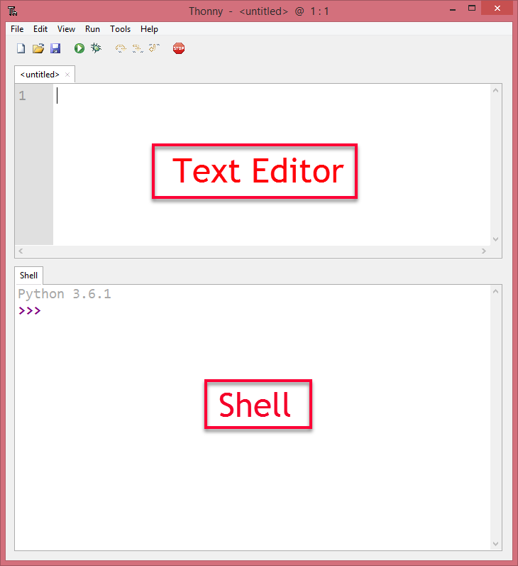

1. Aperçu rapide de Python¶
Note
Dans l’exploration rapide de Python, vous verrez certaines choses que vous ne comprenez pas. Cela est bien et ne vous inquiétez pas. Nous aborderons chacune des idées de manière beaucoup plus détaillée au fur et à mesure que le semestre avance, mais il est vraiment utile de voir un aperçu général avant d’entrer dans les détails de chaque section.
Si vous préférez regarder cette vidéo décrivant certaines fonctionnalités importantes de Python.
1.1. Qu’est ce que Python?¶
Python est un langage de programmation qui vous permet d’apprendre à l’ordinateur à faire ce que vous voulez. Vous avez déjà écrit des programmes Python avec Reeborg. Tout ce que vous avez déjà appris (à l’exception de repeat) fonctionne en Python normal. L’utilisation régulière de Python nous permet de commencer à explorer d’autres manières dont nos programmes peuvent produire des sorties et prendre des entrées.
1.2. Exécuter Python sur votre ordinateur¶
Il existe de nombreuses façons d’installer Python sur votre ordinateur (en fait, une version de Python est peut-être déjà installée sur votre ordinateur). Cependant, l’un des moyens les plus simples de faire fonctionner Python sur votre ordinateur (Windows, Mac ou Linux) consiste à download Thonny. Allez télécharger Thonny maintenant. L’installation ne nécessite pas de droits d’administrateur. Vous devriez donc pouvoir l’installer dans le laboratoire informatique de votre école (vérifiez bien auprès de votre enseignant qu’il accepte cette tâche en premier!). Vous voudrez peut-être également installer Thonny à la maison.
Pour chacun des segments de code que vous voyez sur cette page, vous pouvez les exécuter directement dans votre navigateur Web OU vous pouvez copier/coller le code dans Thonny pour l’exécuter.
Lorsque vous utilisez Thonny, vous devez comprendre la différence entre l’éditeur de texte et le shell (également appelé l’interprèteur/interpreter). Si vous souhaitez enregistrer votre code pour l’utiliser ultérieurement, vous devez le saisir dans l’éditeur de texte, ce qui vous invitera à enregistrer votre fichier quelque part sur le disque lorsque vous appuierez sur le bouton Exécuter (ou sur F5). La sortie de votre code apparaîtra dans le shell (sous l’éditeur de texte). Vous pouvez également saisir le code Python de votre choix dans le shell, ce qui constitue un moyen pratique d’essayer de nouvelles choses en Python.
1.3. Espace blanc/Whitespace¶
Comme lors de la programmation de Reeborg, il est très important d’indenter votre code correctement en Python. Par exemple, le code ci-dessous provoquera une erreur de syntaxe lorsque vous cliquerez sur le bouton Exécuter. Cliquez sur le bouton Exécuter pour voir l’erreur. Maintenant, pouvez-vous comprendre comment résoudre ce problème? Modifiez le code, puis cliquez à nouveau sur Exécuter pour voir si vous l’avez corrigé!
1.4. Impression de données sorties/Printing Output¶
Comme vous l’avez vu dans l’exemple ci-dessus, vous pouvez print() /imprimer des choses sur la sortie standard (généralement la console/interpréteur Python). La fonction print() sera utilisée dans beaucoup des exemples suivants. Notez que print() peut prendre autant d’arguments qu’on veut, séparés par des virgules. Ainsi, vous pouvez imprimer quelque chose comme ceci: print ("lundi", "mardi", "mercredi"), qui afficherait lundi mardi mercredi, chaque argument étant séparé par un espace.
Note
Il y a beaucoup d’autres façons pour un programme de produire une sortie, comme dessiner, allumer des LED, etc. Nous étudierons certaines de celles-ci plus tard dans le cours.
1.5. Variables et types de données/Variables and Data Types¶
Espérons que vous vous souveniez d’utiliser des variables pour garder une trace des choses lorsque nous utilisions Scratch. Par exemple, nous avons utilisé une variable appelée «nombre de côtés» lorsque nous avons commencé à dessiner des polygones réguliers. En Python, nous pouvons également créer des variables. Dans l’exemple ci-dessus, nous avons créé une variable appelée un_numbre. Nous devons faire attention à la façon dont nous nommons les variables, car elles ne peuvent pas être des mots-clés tels que if,`not`, etc. Un mot-clé est un mot qui a déjà une signification spéciale en Python. Les variables doivent commencer par une lettre et si elles contiennent plus d’un mot, vous devez mettre un trait de soulignement entre les mots (comme variable_utile ou quelque_chose_d_autre).
Les types de données fondamentaux qui nous préoccupent en Python incluent:
- int (entier/integer, tel que
3ou-5) - float (nombre à virgule flottante/floating point nombre, tel que
1.2ou-4.75) - str (chaîne/string, telle que
"hello"ou'Friday'or"5") - bool (booléen/boolean, telle que
TrueouFalse)
Nous utiliserons chacun des types de données indiqués ci-dessus tout au long du cours, et il est vraiment important que vous compreniez les différences qui existent entre eux. Prenez un moment pour répondre aux questions suivantes.
Vérifie ta compréhension
-
quick-overview1: Quel est le type de données de
- booléen
- Ce n'est pas ``True`` ou ``False``.
- nombre
- Les données ne sont pas numériques.
- float
- La valeur n'est pas numérique avec un point décimal.
- chaîne
- Génial! Les chaînes sont toujours entre guillemets.
"c'est quel type de données"?
-
quick-overview2: Quel est le type de données de
- booléen
- Ce n'est pas ``True`` ou ``False``.
- nombre
- Génial! Les données sont numériques, sans point décimal.
- float
- La valeur n'est pas numérique avec un point décimal.
- chaîne
- Les chaînes sont **toujours** entre guillemets.
3?
-
quick-overview3: Quel est le type de données de
- booléen
- Génial! Le booléen est ``True`` ou ``False``.
- nombre
- Les données ne sont pas numériques.
- float
- La valeur n'est pas numérique avec un point décimal.
- chaîne
- Les chaînes sont **toujours** entre guillemets.
True?
-
quick-overview4: Quel est le type de données de
- booléen
- Ce n'est pas ``True`` ou ``False``.
- nombre
- Les données ne sont pas numériques.
- float
- Génial! La valeur est numérique avec un point décimal.
- chaîne
- Les chaînes sont **toujours** entre guillemets.
1.5?
1.6. Vérifier les types de données¶
Si vous n’êtes pas sûr du type de données, vous pouvez le vérifier en utilisant la fonction type(). Cela fonctionne à la fois sur les valeurs (un élément de données) et sur les variables (un contenant qui contient une valeur). Que fera le code ci-dessous? Après avoir appuyé sur Exécuter ci-dessous, modifiez la valeur dans la fonction type() pour vous assurer que vous comprenez vraiment ce qu’elle fait. Remplacez le 5 par le 5.3. Qu’est ce que tu obtiens? Que serait le résultat si on le change à "5.3"?
1.7. Conversion des types de données¶
Parfois, vous devrez peut-être convertir un type de données en un autre. Vous pouvez utiliser les fonctions suivantes pour type cast/saisir des données:
str(x)pour convertir x en chaîneint(x)pour convertir x en nombrefloat(x)pour convertir x en nombre à virgule flottante
1.8. Opérateurs mathématiques¶
Nous pouvons faire des calculs avec Python, mais nous devons connaître les opérateurs à utiliser. Le tableau suivant démontre les opérateurs mathématiques les plus fréquemment utilisés dans Python.
| Symboles | Operations | Example | Sortie |
|---|---|---|---|
| + | Addition | 1 + 2 |
3 |
| - | Soustraction | 2 - 1 |
1 |
| * | Multiplication | 2 * 2 |
4 |
| / | Division | 5 / 2 |
2.5 |
| // | Division Tronquée (quotient) | 5 // 2 |
2 |
| % | Modulo (reste) | 5 % 2 |
1 |
| ** | Puissance | 5 ** 2 |
25 |
1.9. if/si¶
La structure de contrôle if fonctionne comme elle le faisait avec Reeborg. Exécutez l’exemple donné ci-dessous. Que se passe-t-il si vous le changez à nombre = 23. Et si vous le changez à nombre = 10?
Note
Un seul signe égal = est utilisé pour assigner une valeur. Deux signes égaux == sont utilisés pour comparer une valeur.
1.10. if/elif/else/si/alors/sinon¶
La structure de contrôle if/elif/else fonctionne exactement de la même manière que lors de la programmation de Reeborg. La chose importante à retenir est que seulement une des branches peut exécuter. Lisez le code ci-dessous et prédisez ce que vous pensez sera la sortie. Puis changez-le en température = 25. Quelle sera la sortie maintenant? Et si vous le changiez en température = 5? Ensuite température = 15?
1.11. while loop¶
Recall that we used a while loop in Reeborg when we didn’t know the nombre of iterations ahead of time. In other words, the body of while will be repeated as long as the controlling boolean expression evaluates to True. Run the code below. Can you change the code so that it counts up from 1 to 10, then says “Here I come!”?
1.12. for loop¶
When we knew the exact nombre of iterations required in Reeborg, we used the repeat command. That command was not part of regular Python – it was added to keep Reeborg coding as simple as possible. Although I won’t explain all the details about it yet, I will introduce you to the Python version of a repeat loop. If we want something to repeat 10 times, we could do the following: (after running the code, change the 10 to some other nombre and try it again)
Notice that the loop above repeats 10 times, but begins counting at 0, so the last nombre is a 9. We can control the for loop even more by passing two arguments, like this:
1.13. Lists¶
How does the range function above work? What it does is create a list of nombres, which allows us to save more than one value into the same variable. For example, when we called range(5, 11) above, Python created a list with the nombres 5, 6, 7, 8, 9, 10. If we had wanted to create that list ourselves, we could have done something like this:
nombre_list = [5, 6, 7, 8, 9, 10]
We can put any data type inside of the list, so it would also be okay to make a list like:
nombre_list = [5, "happy", 2.5, True]
If we create our own list, we can still iterate through it using a for loop. For example, if you were keeping track of which groceries you wanted to buy at the store, you might put all the items you want to buy into a list, then print out each of them.
If you want to access just one element inside a list, you can specify the location of the element you want. For example, if we wanted to access the carrots from the grocery_list above, we could ask for the 1th element (since we start counting from 0). We enclose the location inside square brackets, so to access the carrots we would call grocery_list[1].
1.14. Functions¶
Just like you were able to teach Reeborg to do new things by creating a new function, we can create new functions in Python as well. Here are a couple examples:
1.15. Taking Input from User¶
If you want the user to type something, you can use the input() function. Here are a couple examples:
Note
input() will always return a string. You will need to convert it to an int or a float if you are expecting a nombre.
The following example is not going to work when you try to run it. Try entering in 16, then 15. Notice that nothing is printed either time, even though it looks like the conditional should be causing it to print. Can you figure out what is wrong and fix it? Hint: think about data types!
1.16. Python Modules¶
One of the great things about Python is that there are a lot of modules that extend the basic functionality of Python. A module is simply a file (or folder) containing Python functions and variables. You have created your own module when you were exploring Reeborg. When you typed from library import *`, you made all of the functions in the library tab available to your program. Please note that although we could use the from library import * syntax, it can cause problems if you accidentally create a function that has the same name as something you have imported. See the second example below for the recommended way to import.
1.17. nombre Guessing Game¶
Remember the nombre guessing game we created in Scratch? The basic premise was as follows:
- generates a random nombre from 1 to 100 and stores it in a variable
- repeats the following until the user guesses the nombre
- gets the user to guess the nombre (using the ask block)
- tells the user if the nombre is too high or too low
- congratulates the user when they guess the correct nombre with a message such as “Way to go! You guessed the right nombre in 9 tries!”
We are going to try to implement this game in Python. Please note: you will likely run into many problems trying to create this game in Python. However, it can be really helpful to try problems that feel like they are above your skill level. Soon, you will be able to create programs like this on your own! Your teacher might choose to give you some time to try this on your own, then demonstrate a possible solution to the problem, or perhaps come back to this game in a couple of weeks.